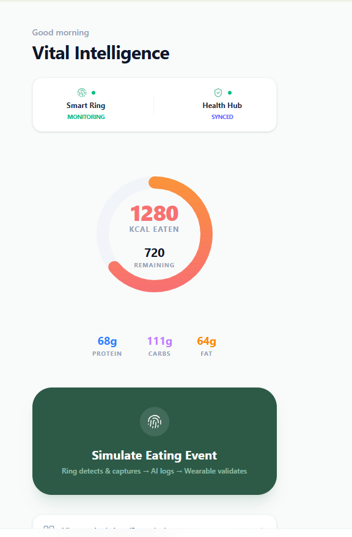
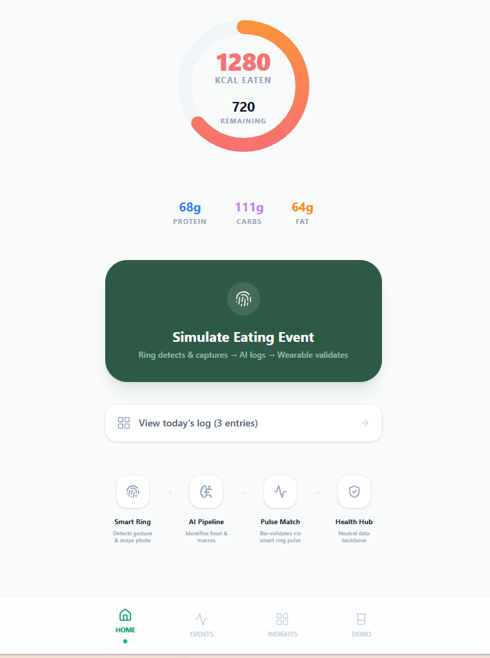
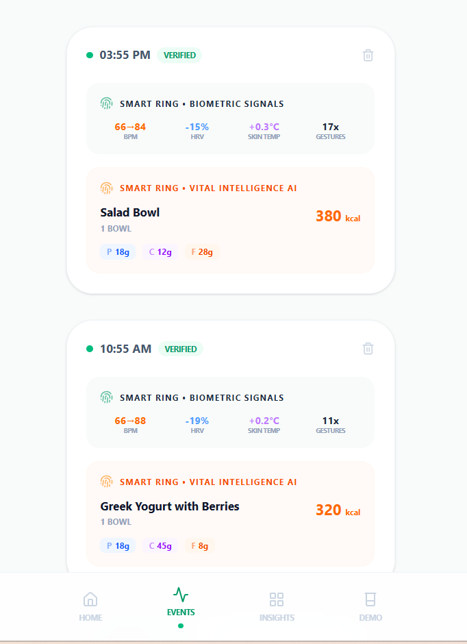
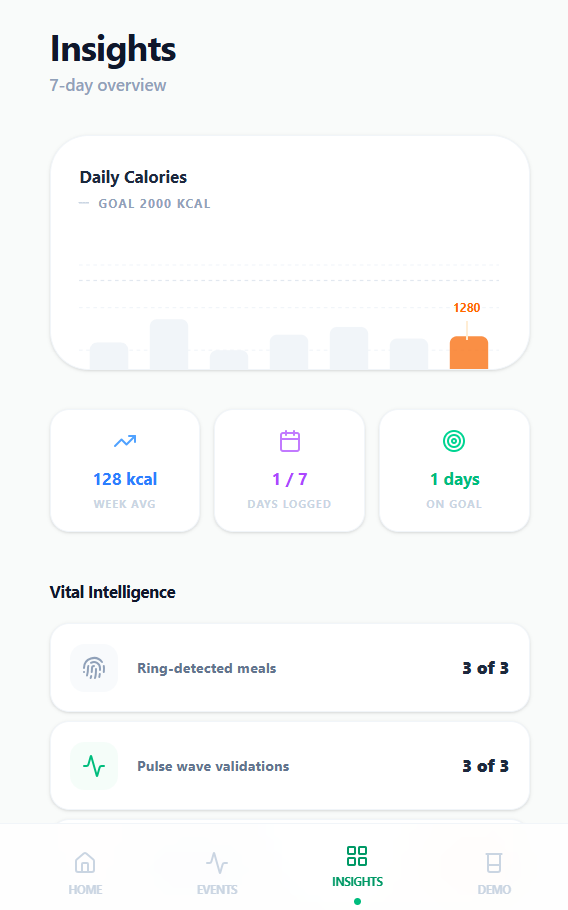
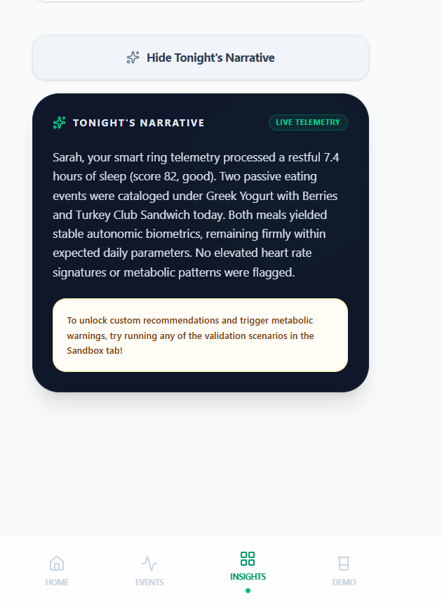

Vital Intelligence: Passive Food Logging and Personal Metabolic Awareness
Concept stage · Prototype built in Google AI Studio · Consumer wellness only, not a medical device
Overview
Vital Intelligence is a concept-stage product I scoped and prototyped end to end: a wearable, a paired camera, and a mobile app that log meals automatically and, each evening, hand the user a plain-language picture of their day. There is no real-time alerting. The user opens the app when they choose and reads one calm summary of what they ate and how their body responded.
Nothing is built. Every accuracy and detection claim in this write-up is a design target, not a validated result. The work here is the product thinking: the requirements, the flows, the trigger logic, the honest limitations, and a clickable prototype that makes the concept concrete.
The Problem
Manual food tracking does not stick. Most people who start a food diary give up within a month, and what they remember eating rarely matches what they actually ate. That leaves two gaps: no reliable record of intake, and no connection between what someone eats and how their body actually reacts to it.
The persona I designed around is Megan, 38, a pharmacy manager who wants to lose weight to lower her diabetes risk. She has tried the food diary apps and cannot keep up with logging.
"I know I should track what I eat. But after a long day, I just can't face logging every meal."
She needs effortless tracking, an accurate sense of her calorie needs, and above all an understanding of how her body responds to the foods she eats every day, so she knows which habits are working for her.
The Concept: Three Components
Three parts work together so the user does nothing at mealtime.
| Component | Role |
|---|---|
| Wearable (ring or watch) | Detects eating events from hand-to-mouth gestures, heart rate, GPS and time of day. Monitors biometrics for 90 minutes after each meal. Tracks sleep overnight. |
| Paired camera | Smart glasses, clip or pendant. Dormant by default. Fires a short burst on the initial eating event, then again every 10 minutes while gestures continue. |
| Mobile app | Receives captures, compares each against items already logged in the current window, builds personal baselines per meal type, and delivers the end-of-day narrative. |
How Detection Works
The camera never runs continuously. It is dormant by default and wakes only on two conditions, going back to sleep after each burst.
| Trigger | What happens |
|---|---|
| Eating event fires | The wearable detects eating from gesture, heart rate, GPS and time of day. The camera wakes, takes a four-frame burst over three seconds, and goes dormant. The 90-minute biometric window opens. |
| Gestures continue within 10 minutes | The camera wakes again for another burst. The app compares the new images against items already logged in this window and adds anything new automatically. Repeats every 10 minutes while eating continues. |
| 15-minute clean gesture gap | The window closes and the eating episode ends. Any gesture activity that resumes after this gap is treated as a new, separate eating event. |
The 10-minute repeat interval is short enough to catch a drink or a second snack packet before it leaves the frame, but long enough that the camera is not firing constantly during a normal meal. The 15-minute gap is long enough that getting up to refill water or take a call does not close the window, and reliable enough that a continuous gap of that length means eating has genuinely stopped. Both thresholds are designed to personalise over time.
A Known Limitation I Designed Around
The repeat-capture comparison works well for packaged and discrete items. Crisps, drinks, snack bars, fruit and branded packaging have recognisable visual signatures the app can match across captures taken minutes apart, so new items get logged fully passively.
Plated and bowl food is the hard case. From a single camera angle, the app cannot reliably tell whether a half-eaten plate of pasta is the same portion or a second helping. The visual difference between those two states is often zero, and estimating the delta between two portion photos compounds the error.
Rather than pretend otherwise, the design accepts the limit. For plated food the system takes one estimate from the opening capture and tracks how long the eating window runs. Only if that window runs longer than the user's personal baseline for that meal does the evening narrative ask a single yes or no question: "Your lunch ran longer than usual, did you go back for more?" One touchpoint, and only when the duration signal justifies it.
| Food type | Repeat-capture behaviour | Portion question? |
|---|---|---|
| Packaged or discrete items | Full new-versus-old comparison. New items logged automatically. | No, fully passive |
| Drinks | Treated as packaged. New ghost log if visible in frame. | No, fully passive |
| Plated food, within baseline duration | Single opening capture. Duration tracked. | No |
| Plated food, exceeds baseline duration | Single opening capture. Duration flag raised. | Yes, one question at end of day |
Nothing Gets Flagged Without Good Reason
For the first two to three weeks the app observes and builds a personal baseline before it surfaces any metabolic pattern. After that, a biometric response is only raised in the narrative if it clears a set of gates designed to strip out noise:
- The eating event was confirmed as a real meal, not random activity
- Exercise or movement after the meal is measured and accounted for
- Stress signals picked up by the wearable are flagged for the user to confirm, and the app learns how stress typically shows up for that person
- Snacking and grazing in the hours after a meal is included, not ignored
- Confounders like poor sleep, feeling unwell or heavy caffeine set the window aside rather than drawing a conclusion from it
Once the baseline is set, the app tracks what is routine for that user and only surfaces what genuinely deviates, relative to their own habits and health goals.
The Evening Narrative
Every summary ends with either one clear suggestion or a plain reassurance that everything looks fine. There are three modes, tied to how many times a pattern has been seen.
| Mode | Trigger | Example |
|---|---|---|
| Quiet | Everything consistent | "4 eating events. Sleep 7h 30m. All meals within your personal patterns. Keep it up." |
| Emerging | Pattern seen once or twice | "1pm pasta, stronger response than usual. Second time this week. Try the smaller portion." |
| Confirmed | Pattern seen three or more times | "Pasta flagged three times. Try adding protein. Worth raising with a dietitian, no urgency." |
Prototype Walkthrough
I built a clickable prototype in Google AI Studio to make the concept tangible: the dashboard, an eating-event simulation, the event log with biometric signals, the weekly insights view, and the evening narrative.





Privacy by Design
The concept keeps data on the device. Food images are analysed on the phone the moment the photo is taken and deleted straight after, never stored or sent. Raw biometric signal is held only while the system checks for patterns, then cleared. Only summary stats are kept, stored locally to build the personal baseline over time. There is no Vital Intelligence server and no cloud database. The app reads sleep data from Apple Health or Google Health each morning and writes nothing back.
What This Is Not
- Not a medical device. Consumer wellness only, with no diagnostic claims.
- Not a glucose monitor. Heart rate and HRV are indirect proxies that suggest patterns, they do not measure metabolic outcomes.
- Not a prediabetes management tool. For users with clinical metabolic risk it can support awareness but should not replace CGM or clinical monitoring.
- Not clinically integrated. No EHR connection, Apple Health and Google Fit only.
- Not accurate on day one. All three layers improve with use over weeks.
How Success Would Be Measured
Because the core value is automation, the metrics I defined center on whether that automation keeps delivering.
| Metric | Why it matters |
|---|---|
| Day 14 retention | The point where manual-logging apps lose most users. If passive logging works, users are still active here. |
| Day 14 churn | A churn rate of 40 percent or higher would signal that the auto-logging or the insights are not landing as valuable. |
| Insights card views per week | Repeat views of the evening narrative indicate the insight, not just the tracking, is what keeps people coming back. |
| Wearable disconnection rate (guardrail) | If the wearable unlinks or stops syncing for more than 48 hours the automation breaks and the dashboard goes empty, which drives immediate churn. |
Open Questions and What I Learned
The honest risks sit in the hardware and the science, not the app:
- Can real, personal metabolic patterns be detected from passive biometric signals rather than noise?
- Is a camera integrated into a ring or wearable technically feasible?
- How accurate is eating-event detection from a wrist gesture, and how badly does eating while walking break it?
- Will people adopt a wearable with a camera at all?
Scoping this taught me to lead with the limitations. The plated-food problem and the six-gate check are the parts I am most pleased with, because they are where I stopped the concept from overclaiming and designed a smaller, more honest behaviour instead. My QA background pushed me toward the edge cases first: false eating events, blurry captures, confounded biometrics, and the moments where the right answer is to ask one question rather than guess.